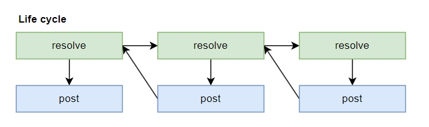
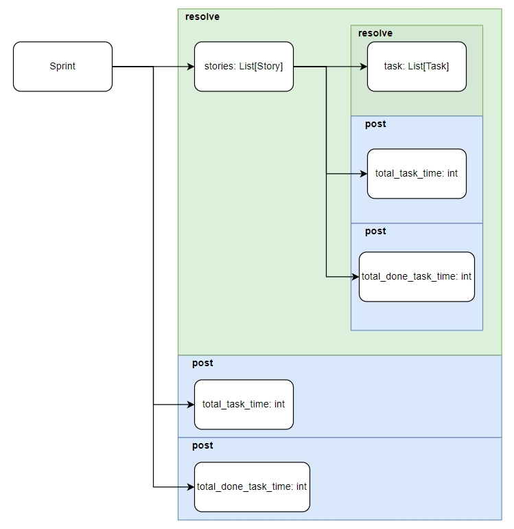

简介
pydantic-resolve 是一个复杂数据结构组合框架，采用直观的解析器架构，彻底解决 N+1 查询问题。
class Task(BaseTask):
user: Optional[BaseUser] = None
def resolve_user(self, loader=LoaderDepend(UserLoader)):
return loader.load(self.assignee_id) if self.assignee_id else None
如果你有 GraphQL 经验，这篇文章提供了全面的讨论和比较：解析器模式：BFF 中 GraphQL 的更好替代方案。
该框架通过增量字段解析实现渐进式数据丰富，支持 API 从扁平到层次化数据结构的无缝演进。
通过实现 resolve_field 方法进行数据获取和 post_field 方法进行转换来扩展数据模型，支持节点创建、就地修改或跨节点数据聚合。
与现代 Python Web 框架完美集成，包括 FastAPI、Litestar 和 Django-ninja。
也支持 dataclass
安装
从 pydantic-resolve v1.11.0 开始，同时支持 pydantic v1 和 v2。
文档
- 文档: https://allmonday.github.io/pydantic-resolve/v2/introduction/
- 示例仓库: https://github.com/allmonday/pydantic-resolve-demo
- 面向组合的开发模式: https://github.com/allmonday/composition-oriented-development-pattern
架构概览
构建复杂数据结构只需 3 个系统化步骤：
1. 定义领域模型
建立实体关系作为基础数据模型（稳定，作为架构蓝图）
from pydantic import BaseModel
class BaseStory(BaseModel):
id: int
name: str
assignee_id: Optional[int]
report_to: Optional[int]
class BaseTask(BaseModel):
id: int
story_id: int
name: str
estimate: int
done: bool
assignee_id: Optional[int]
class BaseUser(BaseModel):
id: int
name: str
title: str
from aiodataloader import DataLoader
from pydantic_resolve import build_list, build_object
class StoryTaskLoader(DataLoader):
async def batch_load_fn(self, keys: list[int]):
tasks = await get_tasks_by_story_ids(keys)
return build_list(tasks, keys, lambda x: x.story_id)
class UserLoader(DataLoader):
async def batch_load_fn(self, keys: list[int]):
users = await get_tuser_by_ids(keys)
return build_object(users, keys, lambda x: x.id)
DataLoader 实现支持灵活的数据源，从数据库查询到微服务 RPC 调用。
2. 组合业务模型
通过选择性组合和关系映射创建特定领域的数据结构（稳定，可在不同用例中复用）
from pydantic_resolve import LoaderDepend
class Task(BaseTask):
user: Optional[BaseUser] = None
def resolve_user(self, loader=LoaderDepend(UserLoader)):
return loader.load(self.assignee_id) if self.assignee_id else None
class Story(BaseStory):
tasks: list[Task] = []
def resolve_tasks(self, loader=LoaderDepend(StoryTaskLoader)):
return loader.load(self.id)
assignee: Optional[BaseUser] = None
def resolve_assignee(self, loader=LoaderDepend(UserLoader)):
return loader.load(self.assignee_id) if self.assignee_id else None
reporter: Optional[BaseUser] = None
def resolve_reporter(self, loader=LoaderDepend(UserLoader)):
return loader.load(self.report_to) if self.report_to else None
使用 ensure_subset 装饰器进行字段验证和一致性强制：
@ensure_subset(BaseStory)
class Story(BaseModel):
id: int
assignee_id: int
report_to: int
tasks: list[BaseTask] = []
def resolve_tasks(self, loader=LoaderDepend(StoryTaskLoader)):
return loader.load(self.id)
业务模型验证完成后，考虑使用专门的查询来替换 DataLoader 以提升性能。
3. 实现视图层转换
应用特定于展示的修改和数据聚合（灵活，依赖于上下文）
利用 post_field 方法进行祖先数据访问、节点传输和就地转换。
模式 1：跨层收集对象
from pydantic_resolve import LoaderDepend, Collector
class Task(BaseTask):
__pydantic_resolve_collect__ = {'user': 'related_users'} # 将 user 传播到收集器：'related_users'
user: Optional[BaseUser] = None
def resolve_user(self, loader=LoaderDepend(UserLoader)):
return loader.load(self.assignee_id)
class Story(BaseStory):
tasks: list[Task] = []
def resolve_tasks(self, loader=LoaderDepend(StoryTaskLoader)):
return loader.load(self.id)
assignee: Optional[BaseUser] = None
def resolve_assignee(self, loader=LoaderDepend(UserLoader)):
return loader.load(self.assignee_id)
reporter: Optional[BaseUser] = None
def resolve_reporter(self, loader=LoaderDepend(UserLoader)):
return loader.load(self.report_to)
# ---------- 后处理 ------------
related_users: list[BaseUser] = []
def post_related_users(self, collector=Collector(alias='related_users')):
return collector.values()
模式 2：计算新的字段
class Story(BaseStory):
tasks: list[Task] = []
def resolve_tasks(self, loader=LoaderDepend(StoryTaskLoader)):
return loader.load(self.id)
assignee: Optional[BaseUser] = None
def resolve_assignee(self, loader=LoaderDepend(UserLoader)):
return loader.load(self.assignee_id)
reporter: Optional[BaseUser] = None
def resolve_reporter(self, loader=LoaderDepend(UserLoader)):
return loader.load(self.report_to)
# ---------- 后处理 ------------
total_estimate: int = 0
def post_total_estimate(self):
return sum(task.estimate for task in self.tasks)
模式 3：传播祖先上下文
from pydantic_resolve import LoaderDepend
class Task(BaseTask):
user: Optional[BaseUser] = None
def resolve_user(self, loader=LoaderDepend(UserLoader)):
return loader.load(self.assignee_id)
# ---------- 后处理 ------------
def post_name(self, ancestor_context): # 从父上下文访问 story.name
return f'{ancestor_context['story_name']} - {self.name}'
class Story(BaseStory):
__pydantic_resolve_expose__ = {'name': 'story_name'}
tasks: list[Task] = []
def resolve_tasks(self, loader=LoaderDepend(StoryTaskLoader)):
return loader.load(self.id)
assignee: Optional[BaseUser] = None
def resolve_assignee(self, loader=LoaderDepend(UserLoader)):
return loader.load(self.assignee_id)
reporter: Optional[BaseUser] = None
def resolve_reporter(self, loader=LoaderDepend(UserLoader)):
return loader.load(self.report_to)
4. 执行 Resolver
from pydantic_resolve import Resolver
stories: List[Story] = await query_stories()
await Resolver().resolve(stories)
处理完成！
技术架构
该框架通过保持与实体关系模型的一致性，显著降低了数据组合的复杂性，增强了可维护性。
使用面向 ER 的建模方法可以提供 3-5 倍的开发效率提升和 50% 以上的代码减少。
利用 pydantic 的能力，它支持类似 GraphQL 的层次化数据结构，同时在数据解析过程中提供灵活的业务逻辑集成。
与 FastAPI 无缝集成，构建前端优化的数据结构并生成 TypeScript SDK 以实现类型安全的客户端集成。
核心架构为 pydantic 和 dataclass 对象提供 resolve 和 post 方法钩子：
resolve：处理数据获取操作post：执行后处理转换
这实现了一个递归解析管道，在所有后代节点处理完成时完成。

考虑 Sprint、Story 和 Task 关系层次结构：

在使用定义方法的对象实例化后，pydantic-resolve 遍历数据图，执行解析方法，并产生完整的数据结构。
DataLoader 集成消除了多级数据获取中容易出现的 N+1 查询问题，优化了性能。
此外，该框架提供暴露和收集器机制，用于复杂的跨层数据处理模式。
测试和覆盖率
当前测试覆盖率：97%
基准测试
基于 FastAPI 的 ab -c 50 -n 1000 测试。
strawberry-graphql
Server Software: uvicorn
Server Hostname: localhost
Server Port: 8000
Document Path: /graphql
Document Length: 5303 bytes
Concurrency Level: 50
Time taken for tests: 3.630 seconds
Complete requests: 1000
Failed requests: 0
Total transferred: 5430000 bytes
Total body sent: 395000
HTML transferred: 5303000 bytes
Requests per second: 275.49 [#/sec] (mean)
Time per request: 181.498 [ms] (mean)
Time per request: 3.630 [ms] (mean, across all concurrent requests)
Transfer rate: 1460.82 [Kbytes/sec] received
106.27 kb/s sent
1567.09 kb/s total
Connection Times (ms)
min mean[+/-sd] median max
Connect: 0 0 0.2 0 1
Processing: 31 178 14.3 178 272
Waiting: 30 176 14.3 176 270
Total: 31 178 14.4 179 273
pydantic-resolve
Server Software: uvicorn
Server Hostname: localhost
Server Port: 8000
Document Path: /sprints
Document Length: 4621 bytes
Concurrency Level: 50
Time taken for tests: 2.194 seconds
Complete requests: 1000
Failed requests: 0
Total transferred: 4748000 bytes
HTML transferred: 4621000 bytes
Requests per second: 455.79 [#/sec] (mean)
Time per request: 109.700 [ms] (mean)
Time per request: 2.194 [ms] (mean, across all concurrent requests)
Transfer rate: 2113.36 [Kbytes/sec] received
Connection Times (ms)
min mean[+/-sd] median max
Connect: 0 0 0.3 0 1
Processing: 30 107 10.9 106 138
Waiting: 28 105 10.7 104 138
Total: 30 107 11.0 106 140